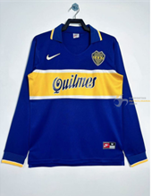

Camiseta de Boca Juniors 1996-1997, con su icónico diseño en azul marino y la franja amarilla horizontal que define la identidad del club, escudo bordado en el pecho y estilo clásico que marcó una época, confeccionada en tejido cómodo que combina tradición y carácter en una de las equipaciones más recordadas del fútbol argentino.
Precio: 44,99€
Comprar